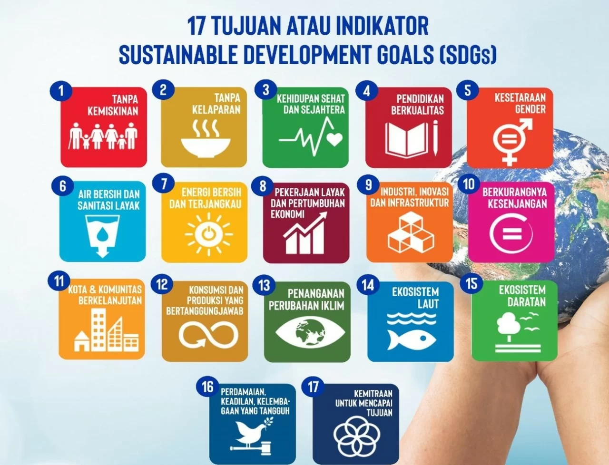
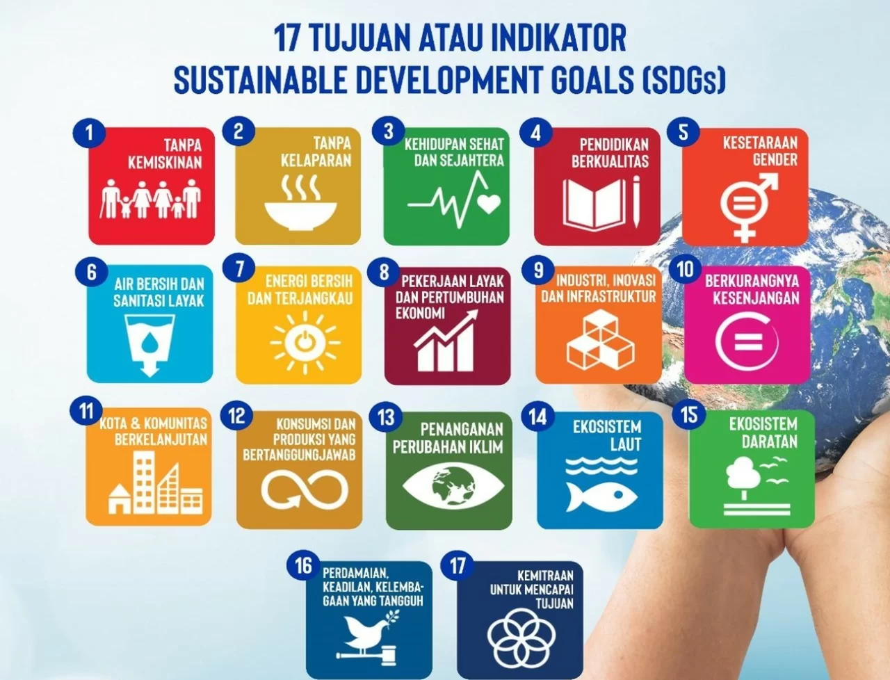

Pengertian SDGs
TPB/SDGs adalah serangkaian tujuan yang ditetapkan oleh Perserikatan Bangsa-Bangsa (PBB) untuk mencapai kehidupan yang lebih baik dan lebih berkelanjutan bagi semua orang di planet ini. Ada 17 tujuan SDGs yang saling terkait dan saling mendukung untuk mengatasi berbagai tantangan global. Mulai dari tindakan kecil dalam kehidupan sehari-hari hingga kebijakan global, kita semua bisa berkontribusi dalam menciptakan perubahan positif. Sustainable Development Goals (SDGs) atau Tujuan Pembangunan Berkelanjutan adalah agenda global yang disepakati oleh negara-negara anggota Perserikatan Bangsa-Bangsa (PBB) pada tahun 2015. Terdiri dari 17 tujuan dan 169 target, SDGs bertujuan untuk mengakhiri kemiskinan, mengurangi kesenjangan, melindungi lingkungan, serta memastikan perdamaian dan kesejahteraan bagi semua orang pada tahun 2030. Tujuan ini mencakup berbagai aspek seperti pendidikan berkualitas, kesehatan yang baik, kesetaraan gender, energi bersih dan terjangkau, pekerjaan yang layak, serta aksi terhadap perubahan iklim. Dengan prinsip "tidak meninggalkan siapa pun," SDGs menjadi panduan bagi negara-negara untuk bekerja sama dalam mencapai pembangunan berkelanjutan. Implementasi SDGs membutuhkan komitmen dari berbagai pihak, termasuk pemerintah, sektor swasta, akademisi, dan masyarakat. Setiap tujuan saling terkait dan memerlukan pendekatan holistik untuk mencapainya. Contohnya, kemajuan dalam pendidikan dapat membantu mengurangi kemiskinan dan meningkatkan kesehatan masyarakat. Selain itu, SDGs juga menekankan pentingnya kerjasama global untuk menghadapi tantangan besar seperti perubahan iklim dan ketimpangan ekonomi. Dalam pelaksanaannya, negara-negara diharapkan untuk menyesuaikan target SDGs dengan prioritas nasional masing-masing sambil tetap mempertimbangkan dampak jangka panjang bagi planet dan manusia.
1. Tanpa Kemiskinan (No Poverty): Mengakhiri kemiskinan dalam segala bentuk di seluruh dunia, di mana pun berada.
2. Tanpa Kelaparan (Zero Hunger): Mengakhiri kelaparan, mencapai ketahanan pangan, serta meningkatkan nutrisi dan pertanian berkelanjutan.
3. Kesehatan yang Baik dan Kesejahteraan (Good Health and Well-being): Menjamin kehidupan yang sehat dan mendukung kesejahteraan bagi semua usia.
4. Pendidikan Berkualitas (Quality Education): Menjamin pendidikan yang inklusif, adil, dan berkualitas serta meningkatkan kesempatan belajar seumur hidup untuk semua.
5. Kesetaraan Gender (Gender Equality): Mencapai kesetaraan gender dan memberdayakan semua perempuan dan anak perempuan.
6. Air Bersih dan Sanitasi (Clean Water and Sanitation): Menjamin akses terhadap air bersih dan sanitasi yang layak untuk semua.
7. Energi Bersih dan Terjangkau (Affordable and Clean Energy): Menjamin akses terhadap energi yang terjangkau, dapat diandalkan, berkelanjutan, dan modern untuk semua.
8. Pekerjaan Layak dan Pertumbuhan Ekonomi (Decent Work and Economic Growth): Mendorong pertumbuhan ekonomi yang inklusif dan berkelanjutan serta pekerjaan yang layak bagi semua.
9. Industri, Inovasi, dan Infrastruktur (Industry, Innovation, and Infrastructure): Membangun infrastruktur yang tangguh, mendorong industrialisasi inklusif, dan mempromosikan inovasi.
10. Pengurangan Ketimpangan (Reduced Inequality): Mengurangi ketimpangan dalam dan antar negara.
11. Kota dan Pemukiman yang Berkelanjutan (Sustainable Cities and Communities): Membuat kota dan pemukiman inklusif, aman, tangguh, dan berkelanjutan.
12. Konsumsi dan Produksi yang Bertanggung Jawab (Responsible Consumption and Production): Mengurangi dampak lingkungan dari konsumsi dan produksi yang tidak berkelanjutan.
13. Perubahan Iklim (Climate Action): Mengambil langkah-langkah mendesak untuk mengatasi perubahan iklim dan dampaknya.
14. Kehidupan di Laut (Life Below Water): Melestarikan dan menggunakan secara berkelanjutan sumber daya laut dan samudra untuk pembangunan berkelanjutan.
15. Kehidupan di Darat (Life on Land): Melindungi, memulihkan, dan memanfaatkan secara berkelanjutan ekosistem darat, pengelolaan hutan, dan memerangi degradasi tanah.
16. Perdamaian, Keadilan, dan Kelembagaan yang Kuat (Peace, Justice, and Strong Institutions): Mempromosikan masyarakat yang damai dan inklusif, menyediakan akses terhadap keadilan untuk semua, serta membangun institusi yang efektif, akuntabel, dan inklusif.
17. Kemitraan untuk Tujuan (Partnerships for the Goals): Memperkuat cara kerja global untuk mencapai tujuan-tujuan tersebut melalui kemitraan yang saling menguntungkan.
Galeri Kerjasama
 
